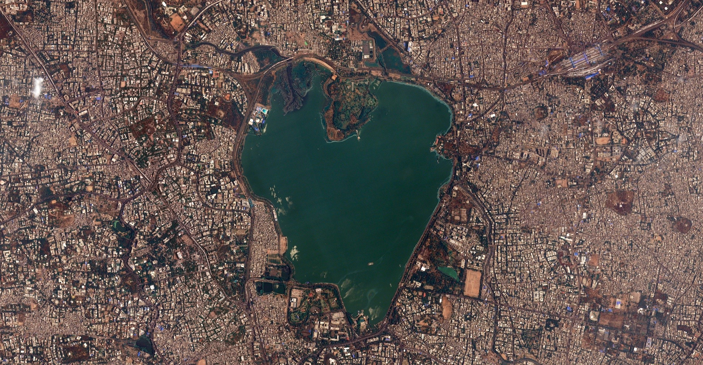
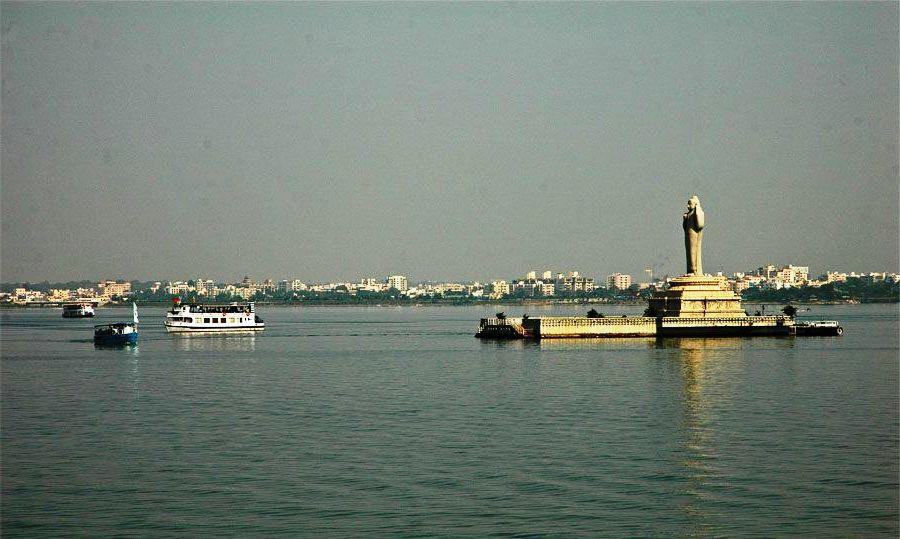
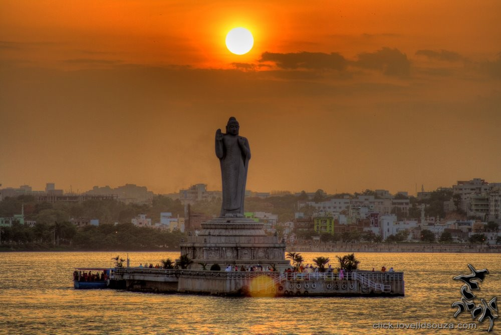

To Search for Holiday Ideas, Plan Your Trip and more.
WELCOME TO ANDHRA

Hussian Sagar
Hussain Sagar is a heart shaped lake in Hyderabad built by Hazrat Hussain Shah Wali in 1563, during the rule of Ibrahim Quli Qutub Shah. It is spread across an area of 5.7 square kilometers and is fed by River Musi. A large monolithic statue of the Gautama Buddha, erected in 1992, stands on Gibraltar Rock in the middle of the lake. It also separates Hyderabad from its twin city Secunderabad.[1] The maximum depth of the lake is 32 feet.

Lake Hussainsagar, a heritage site of India was declared as the 'Heart of the World' by UNWTO on 27th September of 2012, on the occasion of World Tourism Day, for being the World's Largest Heart Shaped Mark, the World's Heritage Heart shaped Mark, and the World's Wonderful Heart Shaped Mark on the face of the earth among the heart shaped marks formed by the heart shaped lakes and islands that exist in the world. Logo for the 'Heart of the World' was inaugurated by H.E. Mr. Taleb Rifai, Secretary-General, United Nations World Tourism Organisation (UNWTO), Madrid-Spain, in the year 2013.[citation needed]
World's Largest Heart Shaped Mark: Hussain sagar lake is the largest heart shaped mark among the marks formed by 78 heart shaped lakes and 9 heart shaped islands on the face of the earth.[citation needed]
World's Heritage Heart shaped Mark: Hussain lake is one of the Qutub Shahi monuments of Hyderabad-Telangana, out of which Golconda Fort, Qutub Shahi Tombs and Charminar were already placed in the tentative list of World Heritage Sites of UNESCO.[citation needed]

Hussain Sagar lake is a popular spot for sailing. Regattas have been held here since 1971 jointly by the EME Sailing Association and the Secunderabad Sailing Club. Hyderabad Sailing Week has been conducted here since 1984 when the first laser boats were introduced by the Laser Class Association of India. The event has grown from 10 laser entries in 1984 to 110 laser entries in 2009. In August 2009 the lake was witness to the monsoon regatta in which sailors from all over India participated. Different classes of sailboats and yachts were raced including four J24, eighteen Hobie Cat and Fourtyseven Optimist (dinghy).[10][11]
The Yacht Club of Hyderabad located at Sanjeevaiah Park, started in 2009 and instituted the Monsoonregatta.com the same year. The club started with just 3 boats now boast of more than 45 on it premises including Lasers, Optimists, Omegas, Kayaks and many safety and rescue vessels. The club trains youngsters to compete at the national level.